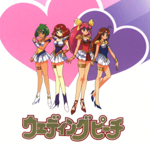

Wedding Peach

From the Anime Pocket Guide:
Cast:
Momoko Hanasaki (Wedding Peach) ............ Kyoko Hikami
Hinagiku Tamano (Angel Daisy) ............. Yuko Miyamura
Yuri Tanima (Angel Lily) .............. Yukana Nogami
Scarlet Ohara (Angel Salvia) ................ Yuka Imai
Yousuke Fuuma ................................ Yuuji Ueda
Jamapii .................................. Miwa Matsumoto
Limone ................................. Shinichirou Miki
Kazuya Yanagiba ........................ Shinichirou Miki
Potamos ................................ Kotono Mitsuishi
Rain Devila (demon queen) ...................... Mika Doi
Reiko ........................................ Yuri Amano
Aphrodite .................................. Mako Hyoudou
Akira Tamano ................................ Ikue Ohtani
Akemi Tamano ............................ Kumiko Takizawa
Masahiro Tamano .......................... Norio Wakamoto
Takurou ................................ Kappei Yamaguchi
Kachuussha ............................. Yuriko Yamaguchi
Igunis .................................... Tomokazu Seki
Noiizu ..................................... Chieko Honda
Pluie ........................................ Kazuki Yao
Pritz .................................... Chisa Yokoyama
Sandra .................................. Takehito Koyasu
Cloud ...................................... Michiko Neya
Donna ....................................... Ikue Ohtani
Natsumi .................................... Maya Okamoto
Description:
Demons appear on Earth. Their job is to take away the love and
leave only hatred. The demons are also searching for something
called "Saint Something Four" which are apparently talismans of
great power. To this end, a girl named Momoko becomes a target
because of something she holds dear...her mother's wedding ring.
To protect herself, and to fight on the side of love, Momoko is
given the powers of an "Ai Tenshi" by Aphrodite, queen of the
angels. Now, Momoko can transform into Wedding Peach and with
her powers of love, fight against the demons' power of hate. Her
two best friends, Hinagiku and Yuri will also become Ai Tenshi
and as Angel Daisy and Angel Lily, help Wedding Peach against
the demons. This is a sillier than usual Magical Girls show with
more than a little similarity to Sailor Moon. It will form
its own identity later with more dramatic plotlines.
Other Resources
Anime Video Game Resource Center © 1998 by Luis A. Cruz